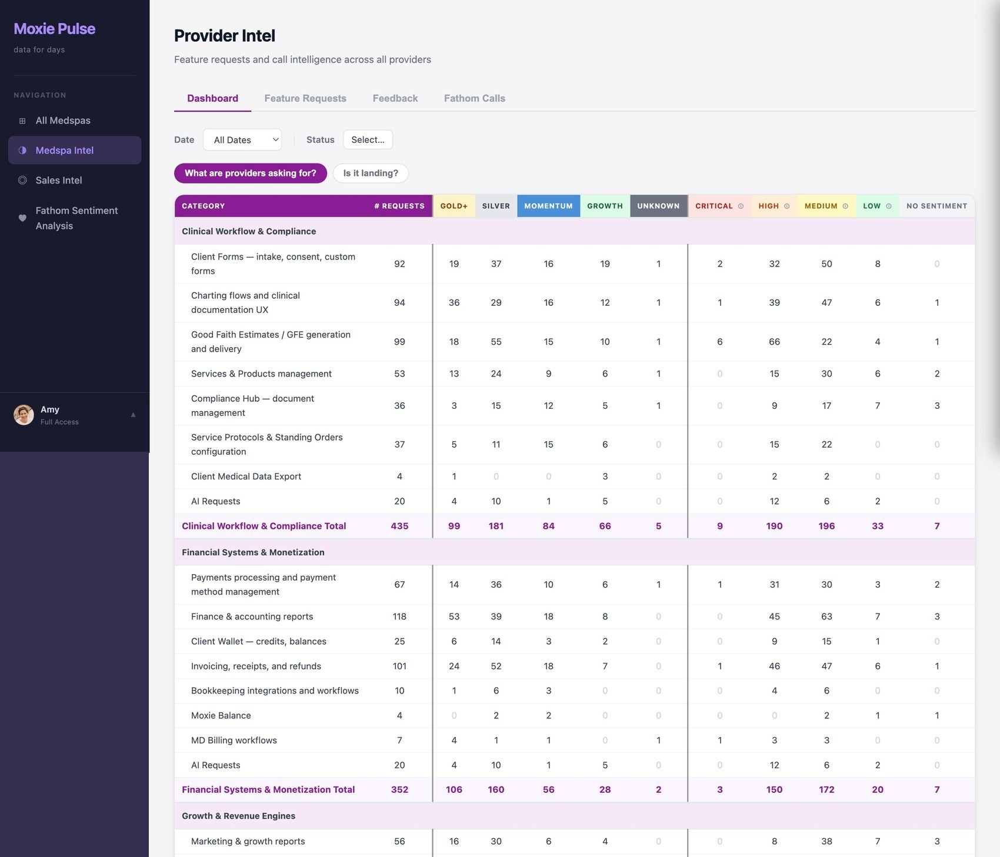
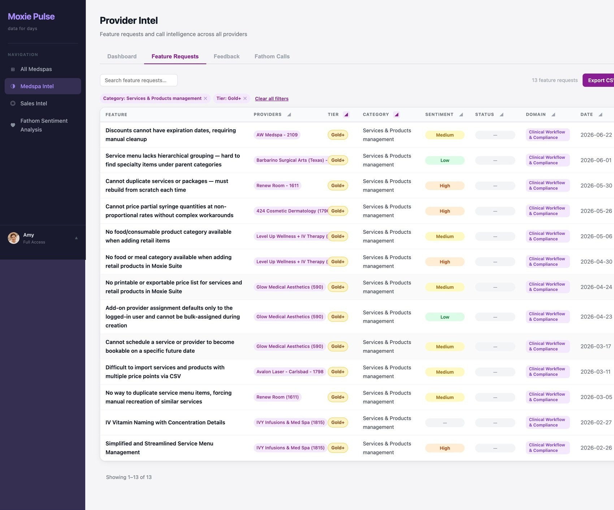
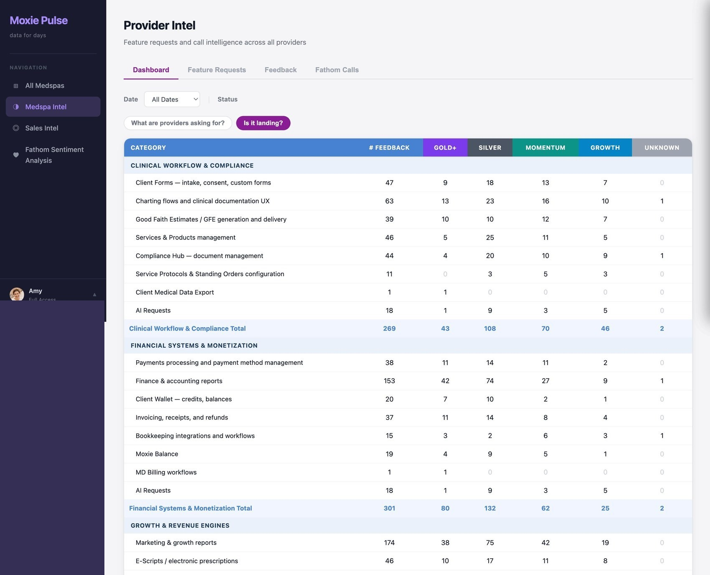

Turning scattered call feedback into signal the whole company acts on.
The signal existed, but only in fragments.
We were getting feedback, but it trickled in through Slack: sparse, scattered, and never adding up to the full picture. The real signal was sitting in our call recordings: provider success managers record in Fathom, the sales team in Attention. The volume just made it impossible to synthesize by hand. We went from roughly 100 calls a week in November 2024 to about 300 a week today.
So I built Moxie Pulse, an internal tool that pulls every request and every piece of praise out of those calls, tags each with the customer and their segment, and lays it all out by domain. I scoped it, designed it, and built it end-to-end with Claude Code.

Click the intersection that matters to you.
The grid is the interaction. A PM clicks the cell where a domain meets a segment to filter for exactly what they need. Click Gold+ × Services & Products and Pulse opens precisely those requests, each tagged with the provider, sentiment, domain, and date, and exportable to CSV for a deeper pass.

I started by hand-linking calls to providers. Then I trained Pulse to link on its own from the provider name in the call, and where it couldn't, it remembers my correction so I never do it twice.

Adopted across the company.
Moxie Pulse went org-wide. It cut discovery and research time, pointed PMs straight to the best providers to pull feedback from, and shaped what we prioritized. In one case a sudden cluster of related reports surfaced a Sev2 bug we caught early, because for the first time the volume was actually visible.
The same pipeline became company-wide intelligence.
Once it worked for provider calls, I built the same thing for sales, pulling from Attention to understand how providers experience their current EMR, where Moxie wins and loses, and what blocks them from switching. Pulse went from a PM tool to a picture of customer needs the whole org relies on.